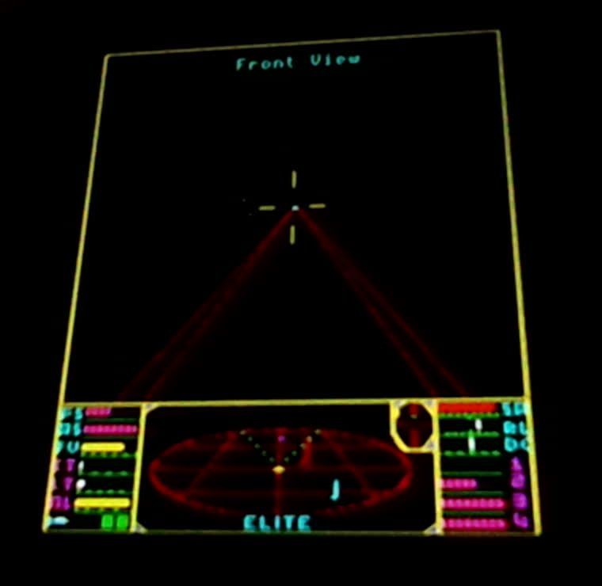

Flying Elite in Weight Space
Tiny neural networks, under 30 KB each, written directly by an LLM with no gradient training, flying a 1986 space game in your browser and on a microcontroller.
MIT CSAIL showed that LLMs can write network weights directly, as a program. We tried it on Elite. An LLM wrote each named unit, watched the pilot fly, and changed the weights behind each failure. There's a pilot for each goal: win, play fair from the screen alone, or put on a show.
An open world, and a seed
Elite has no levels: you choose where to fly, trade and fight. The galaxy is fixed, and the seed is only how many frames the machine waits on the title screen. That delay changes every encounter after it, and each seed replays exactly.
The controls
You can't strafe. You roll until a ship is above you, then pull up, and a half turn takes about five seconds. Networks get a player's controls and nothing else:
| Output | Range | The game receives |
|---|---|---|
roll | ±31 | Joystick left and right |
pitch | ±8 | Joystick up and down |
throttle | 0–40 | Holds SPACE or ? until the speed matches |
fire | over 0.5 | Holds A. The laser fires from the view on screen |
What is fair?
Optimal cheats openly, reading exact ships from RAM. Fair may know only what a player could get from the screen and the game's rules. It doesn't do computer vision: it reads RAM, immediately reduces each ship to what the display would show, and a Kalman filter works only from that. One real fight, three ways:
1. RAM
Exact, plus bytes no screen shows.
2. Screen
Lines: direction, no range. Yellow: coarse scanner blips.
3. Fair filter
Bars: estimate and doubt. Grey ×: the truth, for you only.
| Nearest ship | RAM | Screen | Fair filter |
|---|---|---|---|
| Type | |||
| Range | |||
| Energy | |||
| Hostile |
| Fair also reads | A player gets it from |
|---|---|
| Energy, shields, heat, speed | The dashboard's bars, at their precision |
| Stick position | Their own hands |
| Game loop counter | Watching the screen redraw |
| Cash, cargo, legal status, view | Printed on screen |
| Tally's top byte | “RIGHT ON COMMANDER” messages |
| Planet and station positions | Screen or compass. A simplification: distances aren't reduced to screen precision |
Friend or foe is the hard part. Fair's first careers shot a Transporter while it was still an unidentified dot. It counts as police, and 310 deaths followed in 45 game hours. The rule limits information, not reflexes.
Who picks the pilot?
Not an AI. One line of C, every frame:
g_wsp_net = shownet ? CAMERA : !g_fair ? INTERCEPTOR : FAIR;
A program made of weights
Units are written to mean things. A logical AND is a sum and a bias:
# the camera's fire unit: AND of six 0-or-1 tests fire = relu( +1·in_sights +1·ahead +1·in_range +1·cool +1·shot_allowed +1·target −5 )
Results
The yardstick is the agent's C rules, in effect an aimbot: fitted with CMA-ES and measured over 9,327 recorded fights, with perfect information in Optimal and the same filtered senses in Fair.
| Contest | Network | C rules |
|---|---|---|
| Fair, docking cost | 175.4 | 180.5 |
| Fair, hours to Elite, against C docking | 16.7, 17.0 | 16.8, 17.5 |
| Fair, points a fight minute | 97.1% | 100% |
| Optimal, points a minute | 20.85 | 21.52 |
| Optimal, hours to Elite | 15.5, 15.6 | 14.8, 15.1 |
| Curious, close-up seconds a fight | 4.6 | 0.6 |
| Curious, share of a fight on screen | 29% | 16% |
| Curious, deaths in 317 fights | 17 | 14 |
| Curious, points at 25 hours | 943, 971 | 1,310, 1,288 |
Careers are two seeds each. Fair's networks were tuned by evolution after writing, with no gradients. Optimal's and Curious's fight networks weren't tuned at all.
Programming for fun
On one recorded pack, Optimal and Fair end the fight in four seconds, shooting a ship two pixels wide. Excellent flying, terrible television. The camera stays 165 seconds and draws it up to 85 pixels. Its fixes came from someone watching, and an LLM tracing each complaint to a unit:
- “Just firing at dots for ages.” Now it holds fire until the target is big, unless a chase is truly lost.
- It looked backwards with the target ahead. The view now follows the target.
- It sat on a Cobra for 55 seconds, unshot. One new AND: big and no longer growing means shoot. Our meter disliked this. The meter was wrong.
- It flew the show while fleeing. A break-off now goes to the interceptor, which halved career deaths.
On a microcontroller
A Pimoroni Presto's Cortex-M33, at 250 MHz, emulates the BBC Master and flies it at once.

| On the board | Curious | Optimal |
|---|---|---|
| Whole agent, average of a 20 ms frame | 2.3 ms | 2.0 ms |
| Busiest minute's average | 5.5 ms | 2.7 ms |
| Slowest frame, after one boot spike of 33 ms | 14.5 ms | 14.7 ms |
| Weights in flash | 25.3 KB | 16.1 KB |
That's 20 and 16 minutes early in a career, with few fights and no late emulator frames. Docking adds 13.3 KB. Fair's 9 KB dogfight network doesn't run on the board yet: its build fails a stack check.
Limits
- Not zero-shot. The post's strongest result used no feedback. Ours had a fast lab and many rounds, with a person setting goals and judging.
- Small samples. Fights are chaotic, and small changes move averages.
- Known bug. The docking final can hit station traffic. Killing a police-flagged ship that way makes us an Offender.
Find a faster seed
Use the box at the top, or fly one headless:
MODE=optimal web/tools/fly.sh --game flicker --skew 13
Post yours in the issues. Anyone can replay it, and only results from the same build compare. Weights, labs and failures are all in the repository.
The technique: Takehi, Teoh, Zhang and Khattab, “Sparks of Weight-Space Programming”, November 2026.